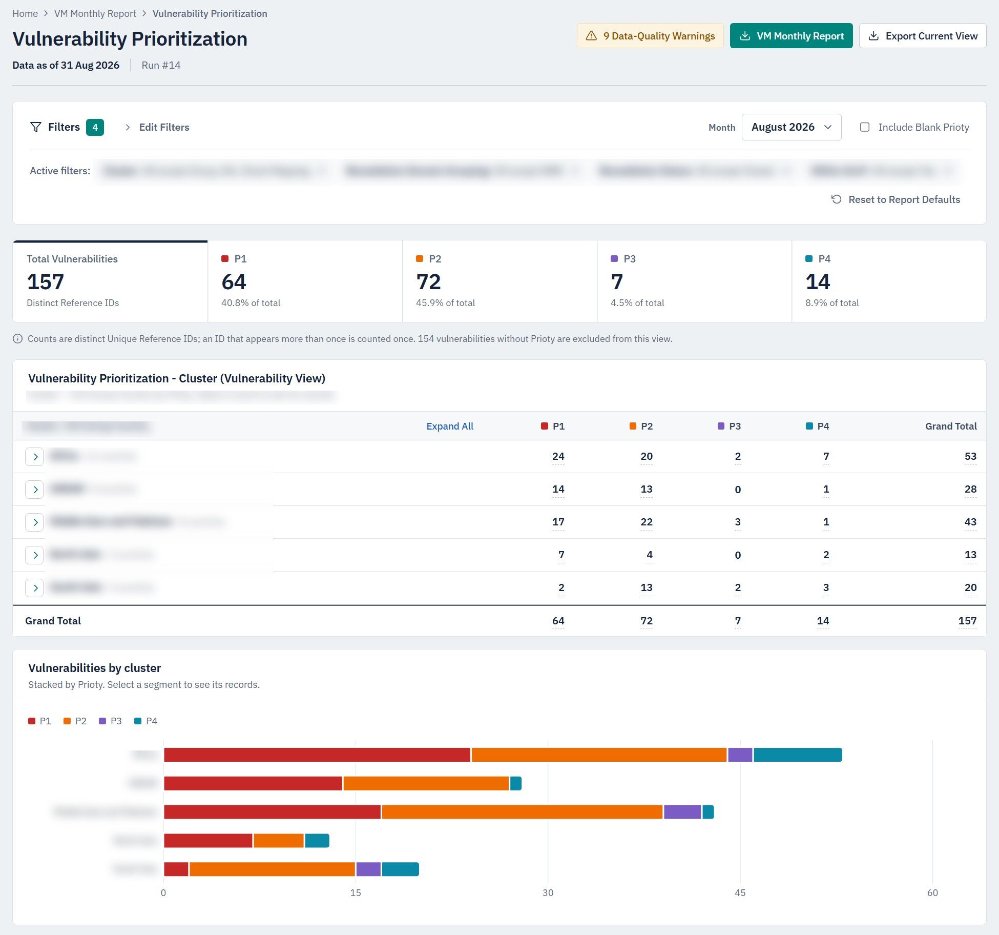

Internship · 2026
Vulnerability management reporting dashboard
Replaces monthly vulnerability reports that were built by hand in Excel with a web dashboard.
- Result
- 2 hrs → 5 min
- Context
- Internship
- Output
- Web + Excel
- Upload the month's files; validation and SLA, priority and remediation rules run automatically
- On-screen reports with filters, drill-downs and month-to-month trends
- Exports to the original Excel templates, so PivotTables still refresh
PythonFastAPIpandasPostgreSQLReactTypeScript
Private repository · internship work
